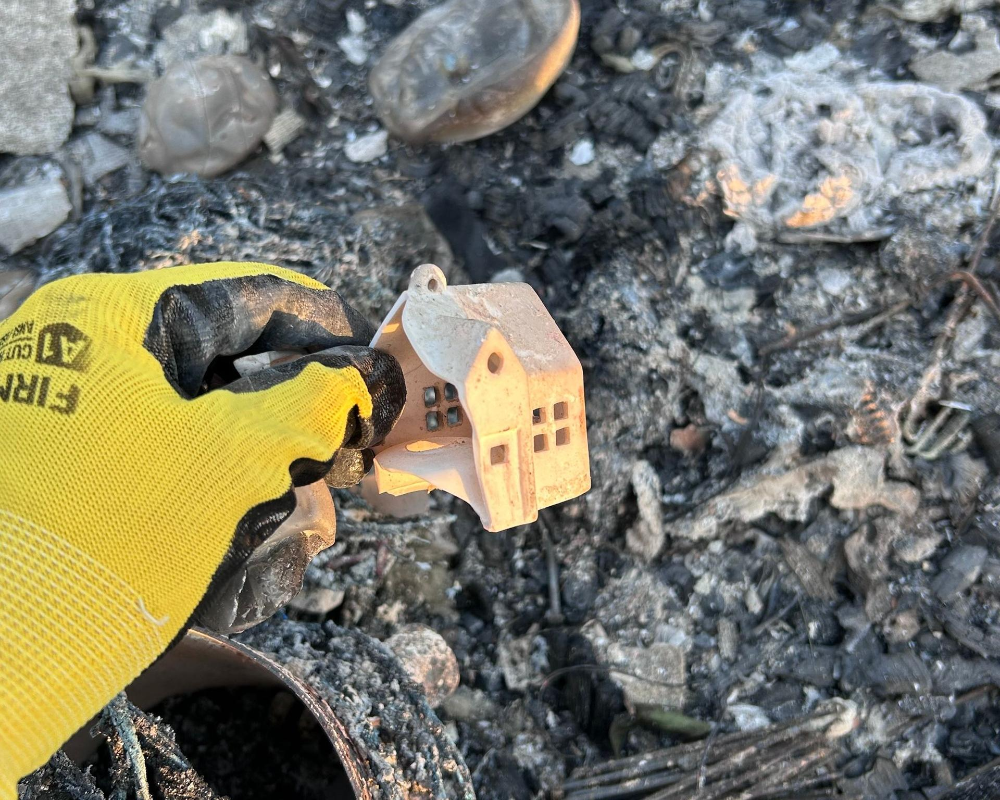
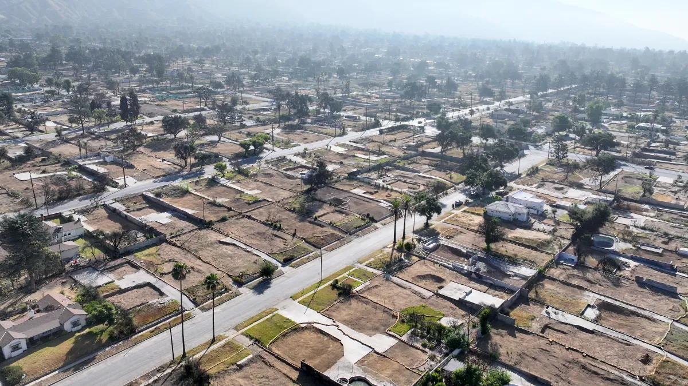

Losing home and rebuilding, reluctantly, in the year after Los Angeles’s Eaton Fire.
By: Anthony Dinh Tran
Jan. 25, 2026
WHEN I BOUGHT MY HOUSE, it was the orange trees that sealed the deal. Two in the front, three in the back, one arching over the entrance—my own private grove. Citrus is common in Altadena, California, sitting comfortably beside palms and oaks, imports coexisting with native plants in an ecological hodgepodge that these foothills seem to invite.
I’m an import too. Back in New York, neighborhoods signaled demographics, like edgy Dimes Square or bourgeois Park Slope. In Los Angeles, regions differentiate themselves through terrain and weather, from ocean fog to mountain sun—the way the day turns, how light falls, what lingers in the air. It’s a younger place, shaped by myths about the Western frontier. Anything can take root here.
Anything, that is, meant to withstand the Santa Anas. For Joan Didion, the infamous winds reflected the psyche of California; for Mike Davis, they revealed its fragility. They arrive like a fever, invisible until the chaparral starts to shimmer.
It wasn’t winter but April when I moved into the house on St. James Place, the orange blossoms just beginning to bloom, their residual sweetness in the air welcoming me to my new home. The trees produced more than I knew what to do with. When my mother visited, she’d wake up earlier than me, using a pole picker to grab the fruit hanging above eye level and filling boxes to give to her church’s outpost in Orange County. Long puzzled by my serpentine career, she finally had this concrete thing—my midcentury atomic ranch—as proof that my various projects had led somewhere stable. Maybe, even, a place the next generation of our family could begin.
Early last January, I hesitated before stepping outside, already dreading the ritual of cleaning up whatever the winds had scattered overnight.
A couple days after my house burned down, my mom called with a delayed revelation: her house in Saigon, Vietnam, had also burned down, when she was a child. The detail that stuck—she ran out holding her pillow. For comfort, maybe. Or, simply, because it was there.
What unsettled me was how she told the story. She kept interrupting herself to say “I did not remember.” I wondered if I would ever forget. Repression is its own gift: memory wrapped for you, ready to open when it’s needed—or not.
A Place Shaped by Opportunity and Loss
In Los Angeles, people usually ask where you live before what you do. I used to answer Altadena softly, anticipating the reply: “Oh my god, I love Altadena.”
What became Altadena began with irrigation. In the 1860s, Benjamin S. Eaton sluiced canyon water downhill to farmland from streams that had long sustained Tongva villages such as Puntitavjatngna and Topisibit. Soon, citrus thrived where skeptics thought it wouldn’t.
A decade later, Altadena Nursery gave the area its name. Altadena was coined from “alta” (Spanish for “upper”) and “dena” (from Pasadena, itself rooted in an Ojibwe word for “of the valley”). A small act of branding and belief, a testament to what irrigation and imagination could coax from the land, later echoed in mottos like “Beautiful Altadena” and in the names of conservation groups like AltadenaWILD. A place named after a place named after a place.

Orange orchards in Altadena, 1920, reflect the area’s early agricultural roots and the landscape that once defined the community. (University of Southern California Libraries and California Historical Society, via USC Digital Library).
Its unincorporated status gave it a peculiar autonomy: for decades, it was exempt from many of the restrictions that shaped Los Angeles County. That mattered: it made Altadena one of the few places in midcentury California where Black families could buy and keep property, where generational ownership could begin. Between 1960 and 1980, the Black population in the area rose from four percent to 43.
That history stayed with me. So did the idea of cultivating a place you could actually keep. In retrospect, I think I wanted that too.
After all, my father fled North Vietnam after his father was imprisoned and killed. My mother’s home burned down when she was 10. Our family’s home in New York was taken by then-mayor Rudy Giuliani through federal forfeiture in the 1990s. War, politics, climate—whatever the reason, it’s easier for some to lose than to maintain.
In Southern California, disaster is also assumed unevenly. Beginning on January 7, 2025, the Eaton Fire destroyed more buildings than its twin, the Palisades Fire. Yet economic losses in the Palisades were tallied at more than three times those in Altadena.
Comparison is easiest where things can be counted. Watching the wildfire come toward my lawn, I realized fire looks the same on a match as it does on a ridgeline. But loss—that’s singular. No one can say how much was taken from me. I can’t either.
"Rebuilding promises to restore what was lost. But in California, even permanence is provisional."
In the weeks that followed, researchers censused the burn: 61 percent of Black households in Altadena lay within the fire’s perimeter, and nearly half of their residences were destroyed, compared to about a third of non-Black homes. Different scale, same pattern. Generational ownership is a privilege.
I’d bought in a place that once seemed imaginary to my family: permanent mountain sun, a yard, orange trees, a mortgage in my name. For a while, the house itself was what made staying in any one place imaginable. I didn’t yet know that losing it would make leaving harder.
What the Fire Took
While the fires were being contained, I scrolled from wherever I’d landed next. Watch Duty alerts. Footage of horses running downhill. Futile, too-late tips—like stashing furniture in a pool. The texts came all at once, then tapered.
When I was finally allowed back to the house in late January, it was the destruction of the trees that undid me.
Winter is orange trees’ heaviest producing season. On the front lawn, the fruit somehow clung to the tree, dangling like precarious Christmas ornaments, their bottom halves black and top halves orange, a faint equator discernible in between.
In the backyard, because of the heat stress, all the fruit had dropped. The oranges’ skin had burned unevenly, with just a peek of its former color; handling the rounds, I noticed that their innards, despite first appearing whole, had been cooked into mush.
The trees’ bark was split and charred black, revealing a—lovely, actually—tone of light tan wood.
Even weeks later, I could hear the searing, crackling sound the burn must have made. I later learned that the outer shedding meant the cambium—the gummy dividing layer of cells between bark and wood—had dissolved. Without it, a tree rarely recovers.
Inside the Aftermath
Altadena had always been quiet: modest houses with very few lawn signs, coyotes and peacocks wandering wide streets with no parking restrictions. A kind of civic irreverence baked into the unincorporated. The edge of the county: still affordable, still possible. The kind of promise that never lasts for long.
Now it was so quiet, it felt unbearably loud. Usually, you’d at least hear birds. Without houses, there was no layering of sight lines to give the mountains depth. The tallest things left standing were brick fireplaces. Mine was ziggurat-shaped; I’d stacked books on it. Their pages vaporized, their shapes now held in ash. Dryers survived, metal drums hollow and perforated, uselessly intact. My car retained only its frame, its lesser metals melted into the asphalt of the driveway, leaving a slick iridescence that suggested its necessity in the attainment of unnatural speed.
I followed the veins of oil and gas siphoned from their reservoirs, the way they might have incited its all-of-a-sudden, explosive death of something nonliving.
Circumscribing “rooms” required an unattainable synesthesia of memory and proprioception. I suited up, head to toe in plastic, safety goggles on, wearing a respirator more elaborate than anything I’d worn in the pandemic in 2020. Ceramics survived as lone pieces, unseated from their sets. I saw glints of my rock collection, which, once lifted, disintegrated in my hands. I felt like an astronaut picking up moondust.

Caption here. Credit.
The air didn’t smell like much of anything. A report found that all toxic airborne metals stayed within typical “background” levels, except beryllium—the so-called “metal of wildfire”—which, once heated, breaks into tiny particles that linger in the lungs. Mounting a GoPro on my head, as if a second look could be a closer look, I continued to traverse the rubble.
At my mother’s behest, I searched for my deceased father’s silver cross. I found the bathroom wall instead, drywall curled on a bed of broken blue tile, the jewelry box locked away somewhere under it. The only thing I recovered intact was my saber from military school; I’d kept it on a windowsill, and the window, now on the ground, framed it like an item drop in a video game.
Trying to Account for Everything
There are things you leave behind almost as a promise to come back. I had a file folder labeled “ST JAMES PL.” that I glanced at and just left. Grabbing clothes is easy—it’s like skimming through your own thrift store rack. But with books, magazines, CDs, it’s hard to pick favorites. So I took none. (Even my Vidiots DVD rentals, still overdue, burned.) I went to Vroman’s in Pasadena shortly after evacuating but couldn’t buy any books. How would you start your own collection over? What’s the oldest thing you still own?
These questions followed me while filling out an inventory for Coverage C: Personal Property Insurance. After pressure from the state, insurers agreed to pay out 60 percent without documentation, as long as you attested that you’d lost at least that much. I started my claim a day after the fires began; to claim the remaining 40 percent, I’m still listing things I’ve lost, even a year later.
There are clinical approaches to reconstructing a home: aisle by aisle (Costco as proxy), estimating what it would take to refill a kitchen, a bedroom closet, a garage. These systems work best when your life resembles a catalog. Most lives don’t. It’s the unintentional lists that are the hardest. I’ll be at a friend’s house and touch something and murmur, “I used to have this.” Gifts resurface as well: reminders of kindness, generosity, and a particular unevenness that makes you come back for more. I jot them down in my Notes app as an attempt to strip away sentimental value.
The insurance forms assumed I wanted to put everything back the way it was. I wasn’t sure I did. I found spare keys in my backpack and buried them.
There’s a kind of cruel symmetry to the popular mantra of keeping what “sparks joy”; it was sparks that erased most of mine. I still drift into shops with wares curated to feel discovered. I, too, point at the little things and say “cute.” But it’s those little things—tchotchkes, omiyage—and the way the larger things hold them that make up a house, slowly carved from the outside in by the objects placed inside it, each one finding its own nook. Things within things, like a babushka doll. When my house disappeared, that curvature vanished too.
I caught myself wondering if wanting to leave had counted as a cause. “Don’t say that, or it’ll come true,” my mother would say—xui, manifesting bad luck. Weeks before the fire, I had discussed with my psychoanalyst a return to New York, describing the howling winds outside my window over the phone (she’s out east herself). The house had already begun to feel like a nuisance in dumb, expensive ways; a line of ants I sprayed with an organic pesticide left a “permanent” stain on the wood floors. A $5,000 fix I kept postponing. Minor care had turned into damage. The idea of a total loss started to feel like relief.
Long before that, I’d added solar panels and planted a native garden—hedges against a climate disaster that came anyway and took them, and so much else, with it. The months after January blurred; weeks collapsed into calls, paperwork, and waiting. The fire was the quickest part.
Clearing What Remains
The US Army Corps estimated more than four million tons of debris across Los Angeles County. Cleanup arrived in two phases. First, a sweep for obvious hazards. Then the deeper work. I signed up online and joined a queue of thousands of addresses for the latter. An early date was assigned, then postponed; they found birds nesting on the property.
During my first year in the house, I’d taken a native-plant landscaping class and applied it to this lawn—partly ecological (restoration starts with you), partly economical (a minor rebate). All that mulch I’d installed to retain moisture and control weeds was simply zapped, yet my neighbor's bright green lawn remained. In either case, the ground was likely tainted; nearly half of soil samples in Altadena now exceed California’s lead screening level of 80 mg/kg.
An old adage has it that we owe our existence to “a six-inch layer of topsoil and the fact that it rains.” I didn’t yet know how much life was packed into that layer. Following the fires, each lot had to be cleared to roughly six inches of topsoil, a standard developed after the 2018 Camp Fire devastated Paradise, California. It was meant to remove most lead and heavy metals. But ash moves unpredictably; hot spots slip past standards.
I learned, through a gym group chat, that debris crews could sometimes be persuaded to dig a little farther. I asked if the crew had any food allergies; they laughed and said no. So I brought coffee, little tubs of half-and-half, and an assortment of donuts in the mornings, handing them to the state mediator stationed just off my lot. By afternoon, it was tacos. Fried chicken. This was how depth was negotiated.
The trees themselves were marked by risk: X (high), = (medium), or unmarked (low). All of my trees were X-ed, including every citrus and the towering eucalyptus in my backyard. I petitioned to keep them, but pressure to comply came through frequent phone calls and emails.
Debris was processed locally before being hauled away. The Altadena Golf Course was leased as a temporary debris site—an unlikely sorting ground in the middle of town. (Farnsworth Park was also leased, mostly as a parking lot: a move very emblematic of the Los Angeles spirit.) The remains were, and still are, sifted and sorted, trees shredded into mulch, as if one more human intervention might redeem the last.
Eventually, I was allowed to keep a single citrus and the eucalyptus. At the other stumps, I crouched and read the cross-sections. I tried to count the rings to measure the years lost, but it turns out orange trees don’t keep time like that.
The Cost of Starting Over
Throughout January, town halls filled up. At one, in a packed college gym: county officials with maps and “next steps.” Then the Southern California Edison (SCE) director of public affairs, Cody Tubbs, took the mic in a branded long-sleeve polo. A shout from the floor—“Put them underground, I’m sick of you burning down our community!”—prompted the moderator to threaten to shut down the meeting. Tubbs went on. SCE was partnering with state agencies, “shoulder to shoulder.”
Footage from a nearby gas station had already circulated—flashes turning into flames—enhanced by editors at The New York Times.
I went to a community meeting at Pasadena City Church on behalf of my neighbors. Lawyers sparred over who would represent whom. The pamphlets still outlined the same ladder of payback:
- Insurance (not enough)
- FEMA (if you qualified)
- A 2.563-percent-interest SBA loan (once you had a rebuild estimate)
- Finally, a potential settlement from SCE through a mass tort (rather than a class action)
Inventorying was no longer just for insurance; it had become evidentiary. Hundreds of oranges, perpetually accounted for.
"The disaster didn’t end when the flames went out; it just changed forms."
When insurance, loans, and payouts were first mentioned after the fire, my first thought was whether I could come out ahead. I didn’t say this out loud. I thought it quietly. I was doing this on my own. There was no buffer to absorb the risk. I wasn’t trying to get ahead so much as get back to even.
Months later, NPR reported sensor anomalies on SCE’s distribution lines.
Weeks after that, SCE announced its Wildfire Recovery Compensation Program. I attended a “Community Input Workshop” the morning after Halloween, hosted at the local high school. Culpability without accountability, rendered as a slideshow.
I had expected the fury of earlier meetings, but the auditorium was restrained. Some attendees even thanked SCE for coming. Most questions came from people outside the qualifying boundary—renters, those with smoke damage—asking how they might be included.
One question landed differently. Even SCE, it turned out, couldn’t fully explain how payouts were determined. The model had been outsourced to Compass Lexecon, a “leading global economic consulting firm.”
I left the school unsatisfied, pocketing two cream cheese cups from the cold spread as a small, unserious recompense. I nabbed their swag too: mini first aid kits stamped with “www.sce.com/wildfire” on the covers, stocked mostly with Band-Aids.
As the one-year mark approached, rebuilding was starting to feel less like desire than obligation—to the mortgage, to the lawsuit, to whatever “breaking even” might mean in this economy. At first, it seemed simple: rebuild and get made whole, or close enough. I teach at an architecture school—I’m not an architect, but adjacent and adjunct—and briefly let myself imagine a custom house: Neutra-core, foothill light, courtyard to roast a whole chicken.
Then, the estimates came back. The numbers belonged to someone else’s life. I was being asked if I wanted to stay here for decades, just as I wasn’t sure I wanted to stay at all. With interest rates up and construction costs ballooning, I felt priced out of the market and priced back into it at the same time, pinned between what the land was speculatively worth and what it was worth to me—a kind of climate refugee, except where return is compulsory.
Permits are supposedly expedited if the rebuild is within 110 percent of the original square footage, a term labeled “like-for-like.” The phrase repeats on county handouts, insurance claims, and lawsuit clauses. But like-for-like treats loss as substitution; it fails precisely where loss matters.
I’d chosen a compromise: a prefab I could customize. The first renderings included my orange trees. I deleted them again, easier this time.
What Comes Next
There is no correct way through this. You follow the advice that circulates, until it no longer applies. The circumstance is supernatural—a force majeure. So, you become a top-seeded amateur: botanist, historian, negotiator, advocate. An improvised schematic of a person, assumed out of necessity, just enough to navigate the process. Another self-reported inventory.
The project advanced: revisions, version numbers ticking up by tenths. My mother texted screenshots from her feed, photos of her friends’ houses, advice from a feng shui consultant about which direction the stove should face. Via email, everything moved. In practice, I stalled.
There were weeks when the only rebuilding I did was on Redfin, filtering recent sales, scrolling past other people’s pits, a few blackened trunks still visible, bookended by debris-removal certificates, triangulating what a similar lot might fetch.
“What if I don’t rebuild?” I asked my lawyer. She replied: in order to maximize damages, you need a plausible house in play. Rebuilding isn’t about recovery; it’s a performance of continuity. Loss only counts if you can prove you want it back.
At Café Triste in Chinatown, a friend asked how the house was going. I gave him my canned response: my architect and I are iterating, permits soon. Things are in motion.
His brother had also lost a house in the fire. I pictured them already deep into an overbuilt concrete bunker on their land, shock calculated as square footage. Instead, he said: “Actually, they love their rental in Pasadena. They’re not in a rush.”
Another reluctant rebuilder. So, I admitted that I wasn’t in a rush either.
When the wildfire reached my street, it passed over a few houses across from mine. Their survival was harder to live with than my pit. When I went to meet the debris-removal crews, a truck was parked in one of their driveways. The owner came out, yelling at them to move—a classic L.A. parking confrontation, except the stage was settled ash, brick, twisted metal.
The disaster didn’t end when the flames went out; it just changed forms. Blackout, toxic air, then winter rainstorms slickening the burn scars into mud, flooding downhill with nothing left to slow it. Trying to sync up cascading catastrophes with neat timelines of architects, insurers, utilities, and courts felt impossible. So did writing—this essay slid too.

Altadena, California — July 3, 2025: An aerial view shows properties cleared of wildfire debris following the Eaton Fire. The U.S. (Photo by Mario Tama/Getty Images.)
By the time I reconfigured my floor plan on a Post-it to merge Californian light logic and feng shui energy flow, months had passed. I emailed the cleaned-up version to my architect and got a quick reply: “Excited to restart the project.” Then, nothing.
A month went by. I followed up. Somewhere in their system, my future home existed only as a file name—25136 Layout1 (1).pdf—bumped to the end of the line. But it was enough: paralysis became writable once it left a trace.
I still go to new restaurants meant to look 60 years old. I host Thanksgiving again, this time in a rented house. My friends don’t notice that all my things are gone; almost everything I own is from this year, bought secondhand or at estate sales—objects imbued with history, albeit not mine. Belonging, it turns out, accrues in belongings.
People keep asking when I’m rebuilding. I’ve gotten better at the answer: soon, probably. We’ll see. What I don’t say is that the question implies a way back—as if you can ever go back—and I’m not sure there is one. Rebuilding promises to restore what was lost. But in California, even permanence is provisional.
The mortgage auto-withdraws. The insurance is calculated. The lawsuit hums. On paper, I’m moving forward. But every day, something small brings the house back: a piece of redirected mail, an email from the waste company marked $0 owed, or the mortgage still on autopay. An app that tracks my finances lists the home’s value through Redfin. The algorithm doesn’t quite know what to do with disaster—the value has dropped, though not to the price of the land alone.
I have enough books to last a lifetime. Sometimes the spines are enough. A streamlined kitchen. A considered camping kit. You start over by pretending it never happened.
Until you’re reminded again. One day, Google Street View jumped from mid-2022 to late 2025: a pit, hollowed by the Army Corps of Engineers. In this age of constant surveillance, even the exterior of my home—my brief mark on the land—was gone.
My backyard neighbors call me. After months of silence, they admit to the same reluctance, but now “we’re back on the wagon.” They’re living in Laguna Beach now, a place that once felt unrealistic after buying in Altadena. They tell me of a family that went down to Peru. We talk about missing our trees. We realize you can’t imagine a new house while you’re dwelling in the pit. Living under another roof is what eventually makes a house imaginable again.
After that call, I invite my friend to the annual Christmas Tree Lane Lighting. She’d come with me the year before. I park in my driveway that’s still there.
A few friends meet us along the route. They’d lived near the western boundary line. As we walk, one of them tells me they doubled down and bought the lot beside theirs, expanding their yard. It made a different kind of sense. She’d been pregnant with her second child when they evacuated.
We cross the street to Santa Rosa Avenue. I overhear a conversation about the timing of the SCE payouts between two fathers. I want to explain the ambiguity of the legal language, but it feels wrong here.
We get there right on time for the ceremony—Edward James Olmos emceeing, already crying, “ALTADENA STRONG” projected on the backdrop. Toward stage left, a “Disney Village” for volunteers. New this year. The long, slightly tedious speeches from last year by civil servants like the head librarian or sheriff are gone, stripped down to remarks from a celebrity, the head of the association, and a few politicians (one represented by a preapproved statement). A moment of silence for those lost, a smartphone flashlight vigil. Everything about it seems designed to last an evening.
Afterward, we walk back. A new LED streetlamp flickers blue light perceived as white, no longer incandescent pale yellow. A replacement corner sign has gone up, the first address number now subtitled. I take my now-usual mental inventory of what might still be alive.
The sole orange tree has new sprouts. Citrus is typically grafted: a strong rootstock (which grows less desirable fruit) to a top branch that is weaker (but bears the fruit you want). I crouch down to see if the sprouts are high enough. I’m unsure.
I look north toward the hillside: another lot, something like a house. Drywall now. Maybe insulation.
A gust of wind. I turn back to the tree that might give me sour fruit or sweet. Its roots came from elsewhere. They’ve held anyway.